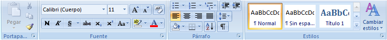

INTRODUCCION A WORD
Word es un procesador de textos a nivel profesional con el cual se puede realizar desde textos sencillos como cartas o memorándums hasta documentos profesionales como tesis o libros.
Cuenta con una amplia variedad de utilidades como la Alineación, Interlineado, Estilos, Imágenes, Referencias y combinación de documentos de otros programas.
Word es utilizado por secretarias, escritores, periodistas, etc, por su fácil manejo y por la variedad de utilidades como se menciona anteriormente. También se puede configurar para enviar el archivo por correo o guardarlo en formato PDF.